챌린지 결과와 숫자
로스 캐머런은 2001년에 첫 계좌를 연 25년 차 미국 데이 트레이더예요. 그는 가끔 작은 돈으로 계좌를 처음부터 다시 키우는 '소액 계좌 챌린지'를 해요. 오랜 세월이 지나도 같은 전략이 여전히 통한다는 걸 보여 주려는 거예요. 이번엔 2,000달러로 시작했고, 이익은 전부 미국 어린이 병원에 기부했어요.
영상을 시작하며 그가 먼저 받아 내는 약속이 있어요. 이 방법을 모의투자로 꾸준히 이익 내며 따라 할 수 있다는 걸 증명하기 전에는 실제 돈을 넣지 말라는 거예요. 자기 결과가 일반적인 게 아니라는 점도 분명히 해요.
아래 화면 왼쪽은 46일 동안의 하루 손익 막대, 오른쪽은 누적 손익 곡선이에요. 처음 몇 주는 막대가 작고 곡선도 완만해요. 후반으로 갈수록 초록 막대가 길어지고 곡선이 가파르게 올라가요. 중간에 빨간 막대 몇 개가 크게 내려간 날도 보여요.
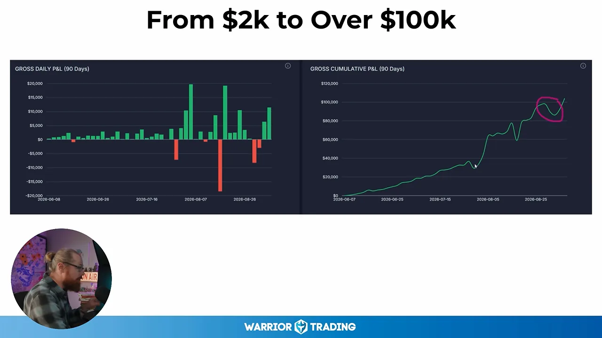
113번 거래, 승률 약 71%, 손익비 1:1
다음 화면 맨 위 줄이 핵심 숫자예요. 총 113번 거래해서 이긴 거래가 80번(70.8%), 진 거래가 33번(29.2%)이에요. 그 아래 줄은 평균 이익 2,150.84달러, 평균 손실 2,058.33달러예요. 이긴 금액과 진 금액이 거의 같으니 손익비는 약 1:1이에요.
가운데 삼각형은 그의 회사가 쓰는 '수익 삼각형' 점수표예요. 승률, 꾸준함, 손익비를 각각 6점 만점으로 매겨요. 이번 챌린지는 승률 5점, 꾸준함 6점, 손익비 2점이었어요. 손익비가 약점이었다는 뜻이에요.
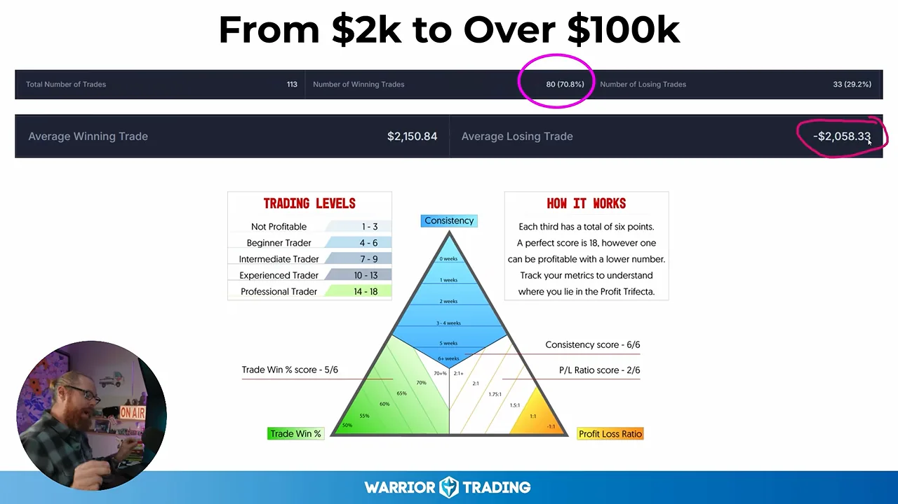
지난번 챌린지와 비교하면 속도는 조금 느렸어요. 그때는 600달러를 44일 만에 10만 달러로 키웠어요. 하지만 그때는 증권사에서 빌린 돈으로 거래하는 레버리지를 썼어요. 이번엔 찰스 슈왑 계좌였고, 저가주에는 레버리지가 거의 나오지 않았어요. 그날 계좌에 있는 현금만으로 거래했으니, 그는 성장 자체는 이번이 더 낫다고 봐요.
왜 위험부터 따질까요
로스는 "트레이딩은 위험하다"는 말로 위험 관리를 시작해요. 그래서 어떤 종목을 보든 먼저 얼마를 걸고 얼마를 벌 수 있는지 따져요. 그의 첫 원칙은 벌 수 있는 것보다 더 많이 걸지 않는 거예요.
그는 화이트보드에 간단한 계산을 해 보여요. 2,000달러를 걸고 2,000달러를 벌 수 있다면 몇 번을 맞혀야 본전일까요? 반, 50%예요. 승률이 50%를 넘으면 그때부터는 거래가 쌓일수록 이익이 쌓여요. 그는 25년 동안 3만 5천 번 넘게 거래하면서 손익비 약 1:1, 승률 약 70%를 꾸준히 유지했다고 해요.
손익비가 정하는 본전 승률
아래 슬라이드 왼쪽 표는 이익(Reward)과 위험(Risk)의 비율마다 본전 승률을 적어 놨어요. 1을 벌려고 1을 걸면 50%, 2를 걸면 67%, 50을 걸면 98%를 맞혀야 본전이에요. 반대로 1을 걸고 2를 노리면 33%면 돼요. 오른쪽 그래프는 같은 내용을 선으로 보여 줘요. 대각선 위쪽 초록 칸이 이익 구간, 아래쪽이 손실 구간이에요.
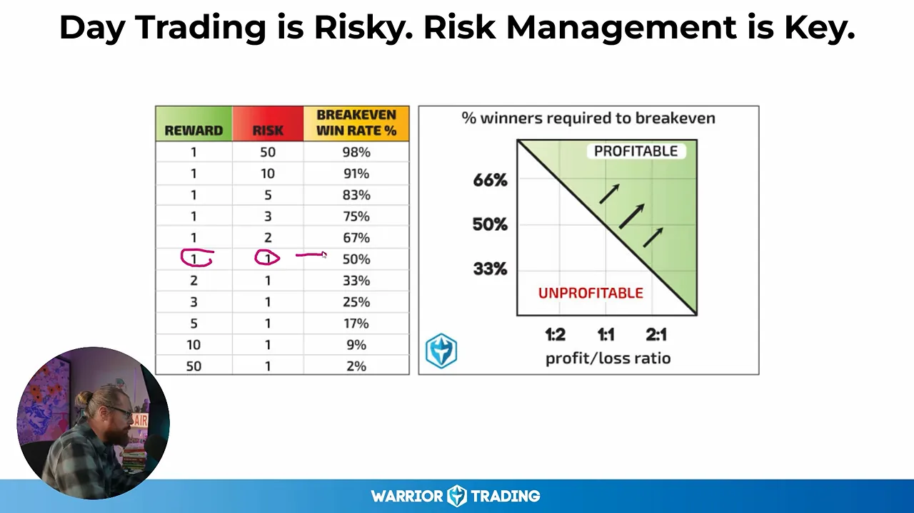
그는 이 원리를 지난 46일에 대입해 봐요. 손익비가 거꾸로였다면, 즉 1을 벌려고 2를 걸었다면 같은 승률로도 이익이 거의 없었을 거예요. 반대로 1을 걸고 2를 벌었다면 같은 기간에 두 배를 벌었을 거고요.
아래에서 직접 숫자를 바꿔 보면 감이 와요. 시작값은 이번 챌린지의 실제 숫자예요.
본전 승률 0%
113번 거래하면 0달러
- 그대로 두고 결과를 보세요. 약 10만 달러가 나와요. 영상의 '10만 달러 넘는 이익'과 거의 맞아요.
- 평균 손실을 4,000달러로 올려 보세요. 1을 벌려고 2를 거는 셈이라 본전 승률이 약 65%로 뛰고, 이익이 크게 줄어요.
- 승률을 50%로 내리고 평균 손실을 1,050달러쯤으로 낮춰 보세요. 1을 걸고 2를 버는 셈이라, 반만 맞혀도 이익이 나요.
기대한 만큼 못 번다는 경험칙
그는 여기에 오랜 경험에서 얻은 규칙 하나를 더해요. 주당 50센트쯤 오를 자리라고 봐도, 실제로는 그 절반도 못 챙긴다는 거예요. 그래서 기대 폭이 작은 자리는 처음부터 걸러요.
| 기대한 상승폭 | 실제로 챙기는 폭 | 로스의 판단 |
|---|---|---|
| 주당 50센트 | 절반이 안 됨 | 노려 볼 만한 자리 |
| 주당 10센트 | 4~5센트 | 손절선을 그만큼 좁게 못 잡아서 거름 |
10센트짜리 자리에서 손절선을 4~5센트 안으로 잡기는 어려워요. 그러면 평균 손실이 평균 이익보다 커지고, 그걸 버티려면 승률이 아주 높아야 해요.
가장 큰 적은 내 머리
로스는 규칙이 문제가 아니라고 말해요. 세 단계 규칙을 매일 그대로 따르면 기대한 결과가 나와요. 문제는 규칙을 눈앞에 두고도 "이번엔 내가 더 잘 안다"고 생각하는 자기 머리예요. 가격이 너무 높아서 사면 안 되는 종목인데도 감을 믿고 규칙을 무시해 버리는 거죠. 그는 사람의 감은 시장에서 돈 버는 쪽으로 맞춰져 있지 않다고 해요.
악순환: 꼭대기에서 사고 바닥에서 판다
아래 슬라이드는 감을 따랐을 때 생기는 고리예요. 맨 위 '나쁜 기록'에서 시작해 오른쪽 '자신감 하락', 왼쪽 '손실 증가'로 돌아요. 감에 휘둘리면 FOMO(Fear Of Missing Out)에 밀려 터무니없이 높은 가격에 사요. 떨어지기 시작하면 손실을 인정하기 싫어 버티다가, 결국 바닥에서 감정적으로 팔아요.
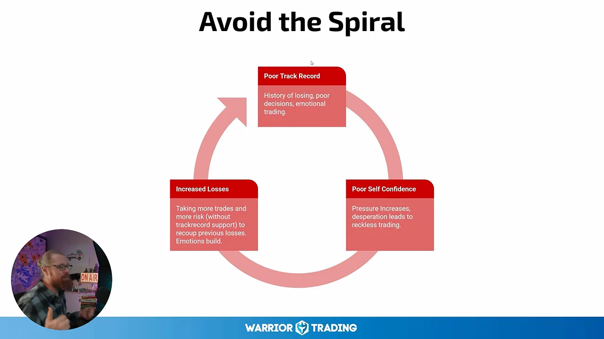
이 고리의 얄궂은 점은 잃을수록 거래 규모를 키운다는 거예요. 같은 방식으로 계속 잃고 있는데 금액만 키우면 악순환만 빨라져요. 로스는 자신도 가끔 이렇게 한다고 인정해요.
선순환: 승률에 집중한다
그가 내놓는 해법은 높은 승률에 집중하는 거예요. 다음 슬라이드 왼쪽 작은 고리는 '높은 승률 → 손익비 개선 → 꾸준함'이에요. 오른쪽 큰 고리는 그 꾸준함이 '좋은 기록 → 자신감 → 이익 증가'로 이어지는 모습이에요.
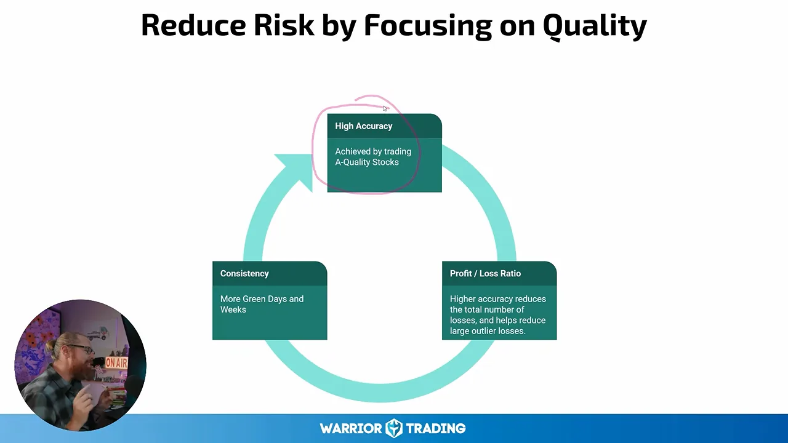
승률에 집중하면 손익비를 깎아 먹던 큰 손실이 사라져요. 그러면 수익 나는 날과 주가 늘고, 기록이 쌓이면서 자신감이 생겨요. 자신감이 생긴 다음에야 거래 규모를 키우고 횟수를 늘려 이익을 키워요. 그는 지난 챌린지 기록에서도 첫 주는 느리다가 점점 빨라지는 모양이 똑같이 나타났다고 보여 줘요.
Money is not the first order of business.
돈이 먼저가 아니에요.
— 영상 11:57
계좌에 10만 달러를 넣으면 큰 거래를 할 수 있을 거라 생각하는 사람도 있어요. 그는 먼저 할 일은 기록과 자신감을 쌓는 거라고 해요. 그리고 그 기초는 모의투자에서 쌓는 거라서, 실제 돈은 꾸준함을 증명한 다음에 넣으라고 해요.
1단계: 종목 고르기 — 다섯 기둥
매일 아침 그의 첫 일은 거래할 만한 종목을 찾는 거예요. 실시간 시세를 모아 조건에 맞는 종목을 걸러 주는 스캐너를 쓰는데, 그가 2017년부터 직접 만든 프로그램이에요. 스캐너가 찾는 조건이 바로 '다섯 기둥'이에요.
아래 슬라이드 표의 '구분(Type)' 열을 보면 1~4번은 초록색 '수요', 5번만 빨간색 '공급'이에요.
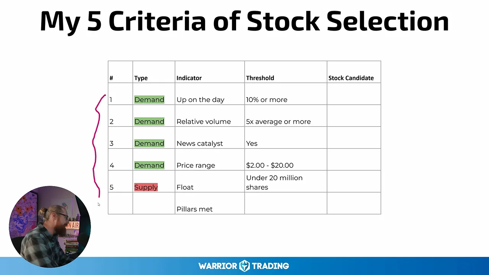
| 기둥 | 기준 | 왜 보나요 |
|---|---|---|
| 1. 상승률 | 오늘 10% 이상 | 이미 사려는 사람이 몰렸다는 증거 |
| 2. 상대 거래량 | 50일 평균의 5배 이상 | 평소보다 훨씬 많이 거래된다 |
| 3. 뉴스 | 오늘 나온 뉴스 | 오르는 이유, 거래가 몰리는 이유 |
| 4. 가격 | 2~20달러 | 소액 계좌에 맞고 개인 투자자가 많이 거래하는 구간 |
| 5. 유통주식수 | 2천만 주 미만 | 팔 수 있는 주식이 적어 수요가 몰리면 빨리 뛴다 |
마지막 기둥이 왜 중요한지 그는 수요와 공급으로 설명해요. 회사가 IPO(Initial Public Offering) 때 시장에 판 주식 수는 정해져 있고, 이게 사고파는 주식의 '웅덩이'예요. 웅덩이가 작은데 뉴스가 나와 사려는 사람이 갑자기 몰리면, 몇 안 되는 보유자에게서 주식을 사려고 다투느라 값이 빠르게 올라요. 하루에 100%, 200%, 300% 오르는 종목은 이런 불균형에서 나와요.
기준은 10년치 거래 기록에서 나왔다
그는 이 기준이 자기 의견이 아니라 데이터라고 강조해요. 아래 두 그래프는 상대 거래량 구간별 이익이에요. 왼쪽 10년 평균에서는 맨 아래 '500% 이상'(5배 이상) 막대 하나가 압도적으로 길어요. 오른쪽 이번 챌린지에서도 이익 대부분은 같은 막대에서 나왔지만, 위쪽 낮은 구간에 빨간 손실 막대가 하나 있어요.
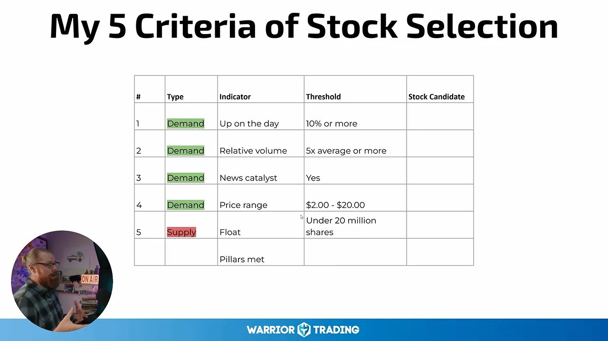
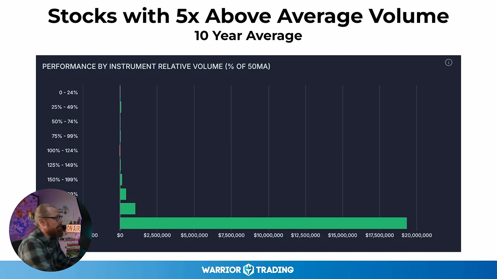
오늘 거래량 자체도 봐요. 다음 그래프는 오늘 거래량 구간별 10년 이익이에요. 위에서 아래로 갈수록 거래량이 많아지고, 막대도 길어져요. 화살표가 가리키는 맨 아래, 2,500만 주 이상 구간이 가장 커요. 좋은 뉴스가 있으면 거래하는 사람이 늘고, 그래서 거래량이 커지기 때문이에요.
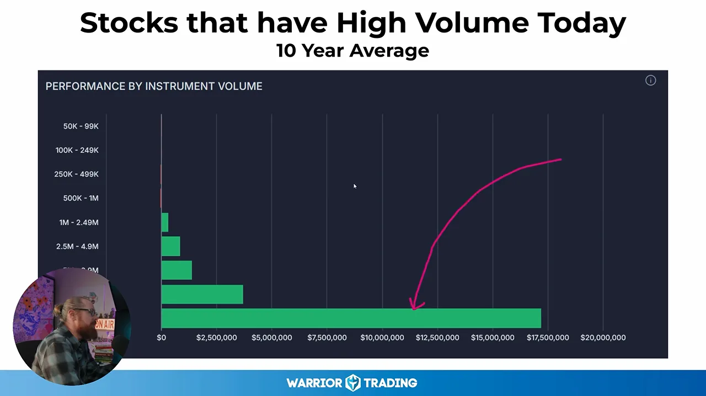
다음은 갭 상승이에요. 전날 장이 끝난 뒤 나온 뉴스로 장외 시간이나 프리마켓에서 이미 오른 종목이에요. 아래 그래프에서 맨 아래 '+2% 초과' 막대가 거의 모든 이익을 차지해요. 그의 전략이 장 마감 후 나오는 속보 뉴스를 타는 것이라서 그래요.
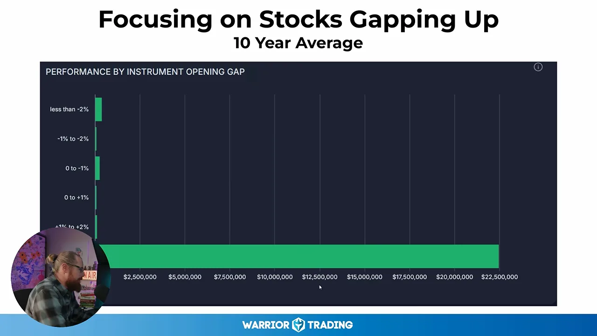
가격대 그래프에서는 '5~9.99달러' 막대가 가장 길고, 그다음이 2~4.99달러와 10~19.99달러예요. 2~20달러가 잘 맞고, 그중 5~10달러가 가장 좋은 구간이라는 뜻이에요. 이번 챌린지도 몇 번의 예외 말고는 이 범위를 잘 지켰다고 해요.
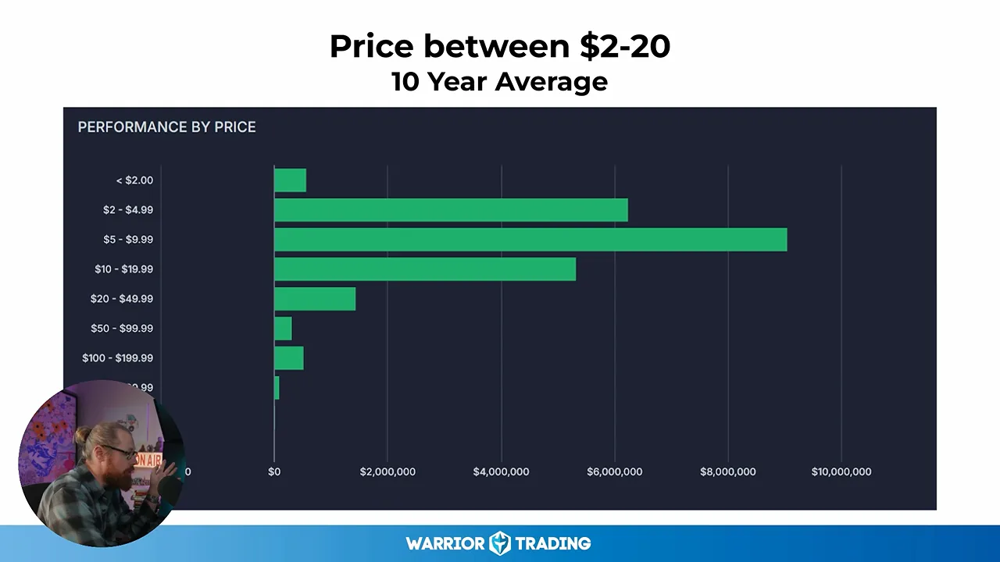
마지막으로 유통주식수예요. 아래는 어느 날의 상승률 상위 종목 스캐너예요. 하늘색 'Float' 열을 보면 287만, 145만, 108만, 562만, 335만 주처럼 대부분 2천만 주 아래예요. 동그라미 친 2,688만 주짜리가 예외예요.
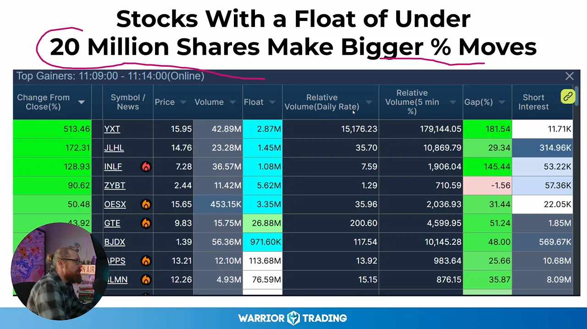
뉴스 없이 오르는 종목은 어떻게 볼까
그런데 지난 46일 동안 뚜렷한 뉴스 없이 엄청나게 오른 종목이 여럿 나왔어요. 영상 전날 2,117% 오른 중국 종목 RETO가 대표적이에요. 사람들은 보통 "누군가 뭔가를 알고 있다"고 결론 내려요.
로스의 설명은 달라요. 뉴스 없이 오르는 종목에는 "곧 꺾이겠지" 하며 공매도하는 사람이 붙어요. 그런데 값이 그들의 손절 기준을 넘으면 어쩔 수 없이 주식을 되사서 갚아야 해요. 이 되사기가 매수세를 더해 값을 더 밀어 올리는데, 이게 숏 스퀴즈예요. 그는 2021년 게임스톱이 주당 500달러까지 오른 것도 이런 경우라고 봐요.
그래서 이런 종목은 다섯 기둥 중 넷만 채우는 셈이에요. 실패할 가능성이 더 높으니 위험을 줄여서 다뤄요. 하지만 그날 상승률 1위라면 뉴스가 없다는 이유만으로 무시하는 건 실수라고 해요.
정리하면 다섯 기둥은 아래 한 장으로 요약돼요. 위의 네 줄이 수요, 맨 아래 노란 줄이 공급이에요.
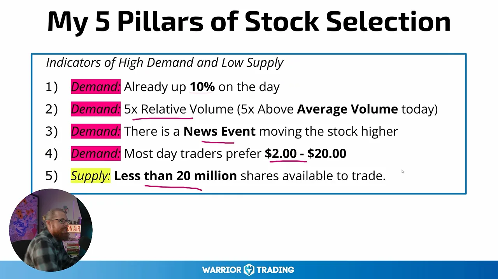
시간대와 최상급 종목
다섯 기둥 안에서도 그는 하루 중 특정 시간에 더 잘해요. 장 초반이 가장 좋고, 시간이 갈수록 성과가 떨어져요. 그가 타는 속보 뉴스가 대부분 장 초반에 나오기 때문이에요. 또 일찍 실수하면 만회할 시간이 있지만, 장 마감 직전에 실수하면 그럴 시간이 없어요.
아래는 이번 챌린지의 시간대별 이익이에요. 위쪽 7시와 8시 줄에 긴 초록 막대가 있어요. 그런데 바로 아래 10시 줄에 빨간 손실 막대가 있어요.
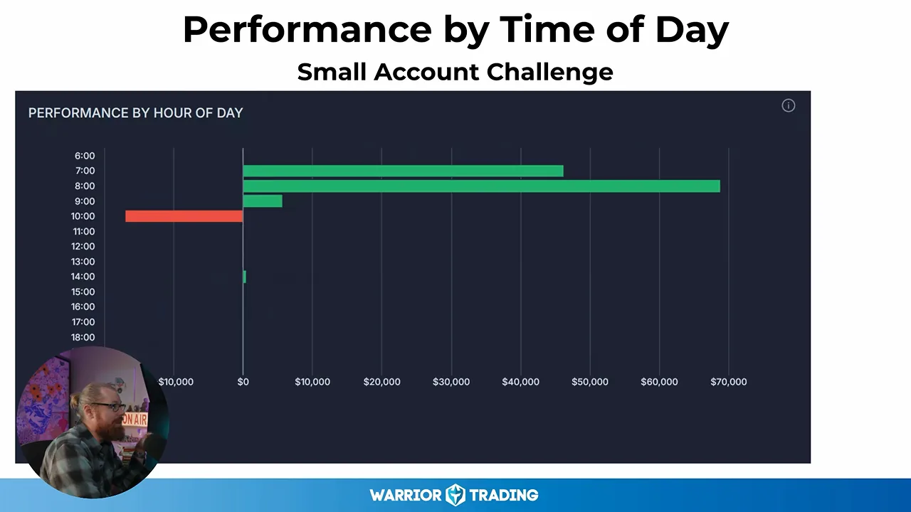
그는 오전 7시부터 9시 30분까지가 가장 깔끔하다고 해요. 9시 30분 정규장이 열리면 시장가 주문, 손절 주문, 거래 정지 기준이 한꺼번에 끼어들어요. 그는 이것들이 개인 투자자보다 시장조성자에게 유리하게 작용한다고 봐요.
최상급 종목은 더 좁게 거른다
그가 가장 좋아하는 종목은 다섯 기둥보다 더 엄격하게 걸러요. 아래 슬라이드 왼쪽 초록 상자가 수요 조건 다섯 개, 오른쪽 노란 상자가 공급 조건이에요.
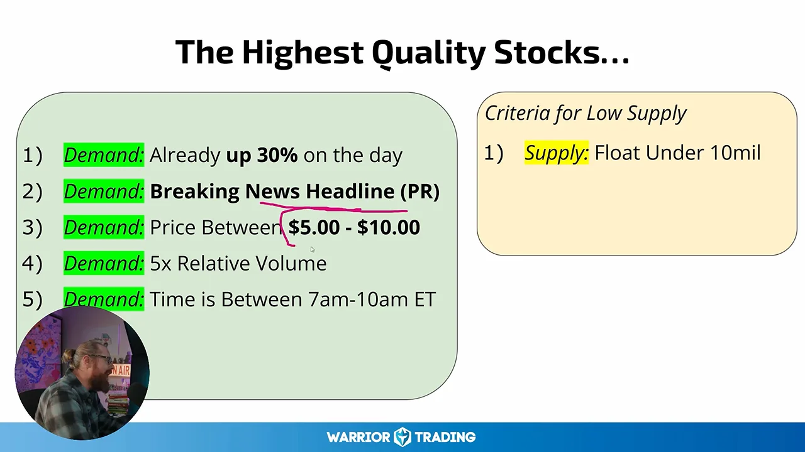
| 조건 | 다섯 기둥 | 최상급 종목 |
|---|---|---|
| 오늘 상승률 | 10% 이상 | 30% 이상 |
| 뉴스 | 있어야 함 | 속보 뉴스가 좋지만 예외 가능 |
| 가격 | 2~20달러 | 5~10달러 |
| 상대 거래량 | 5배 이상 | 5배 이상 (필수) |
| 시간 | — | 오전 7~10시 |
| 유통주식수 | 2천만 주 미만 | 1천만 주 미만 |
유통주식 기준을 1천만 주로 낮추는 건 공급을 더 줄이려는 거예요. 공급이 적을수록 수요와의 불균형이 커지니까요.
46일째 아침, ZTG를 고른 이유
영상을 찍은 46일째 아침의 스캐너예요. 맨 위 ZTG가 308.92% 올라 1위이고, 그 아래 MEDS가 137%예요. 하늘색 유통주식 열을 보면 ZTG는 719만 주예요. 오전 7시 15분쯤이니 아주 이른 시간이에요.
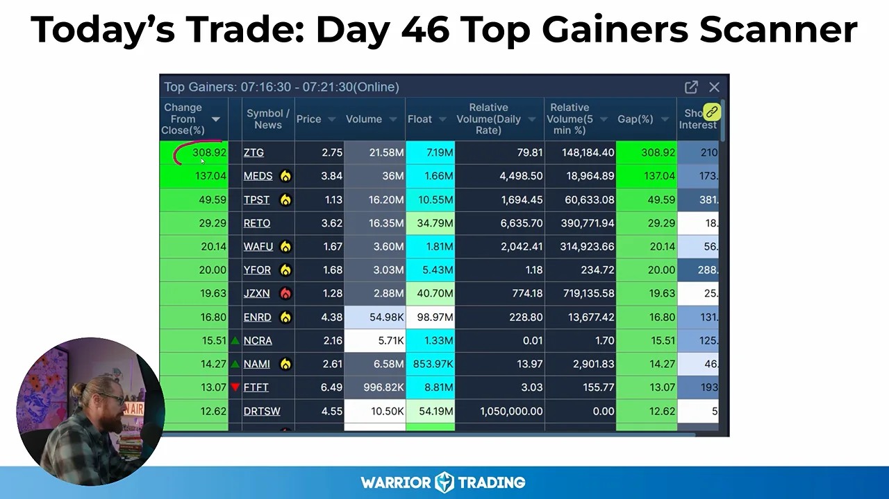
그가 ZTG에 주목한 데는 전날 일이 컸어요. 전날 RETO가 2,117% 숏 스퀴즈를 일으켰거든요. 아래 차트에서 낮게 깔려 있던 가격이 동그라미 친 지점부터 수직으로 치솟아요. 큰 움직임을 놓친 트레이더들은 비슷한 종목이 보이면 재빨리 뛰어들어요.
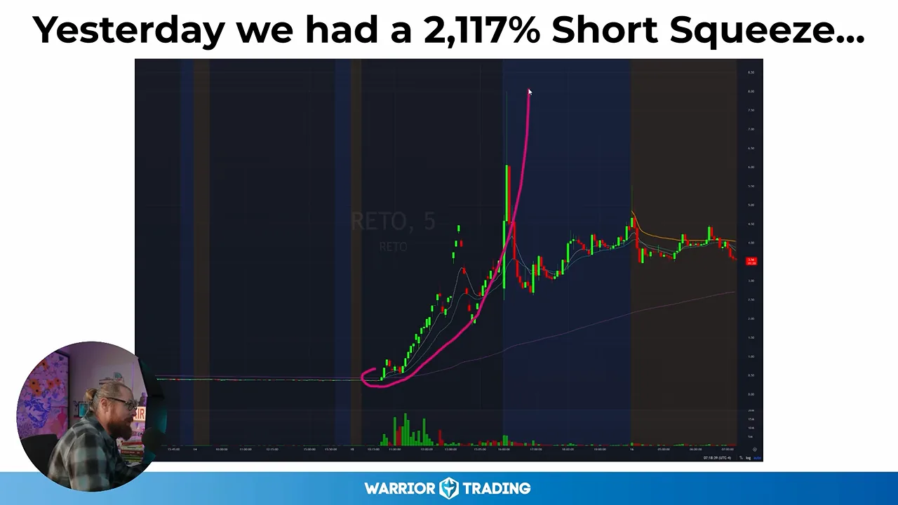
ZTG도 RETO처럼 외국 상장 저가주였고, 순식간에 100% 넘게 올랐어요. 영상 28:00에서 보기그는 ZTG를 다섯 기둥에 대 봐요. 아래 표 오른쪽 '종목 후보' 열이 ZTG의 값이에요. 상승률 150%, 상대 거래량 13,900배, 뉴스 없음, 가격 조건 충족, 유통주식 719만 주예요. 맨 아래 '충족한 기둥'은 4/5예요.
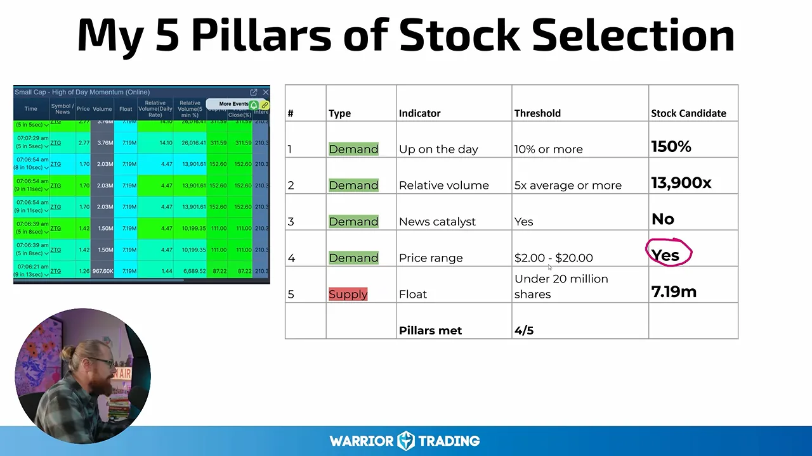
뉴스가 없다는 점은 오히려 전날 RETO와 더 닮았다고 봤어요. 회사가 중국 특별행정구인 마카오에 있다는 '중국 연결고리'도 같았어요. 결국 ZTG는 5천만 주가 거래되며 400% 올랐어요. 그는 이 종목이 더 오를 가능성이 있고, 시장에서 가장 뻔한 종목이라고 판단했어요. 여기까지가 1단계예요.
2단계: 사는 자리 — 첫 눌림목
종목을 골랐으면 이제 어디서 살지 정해야 해요. 그의 답은 눌림목을 기다리는 거예요. 급등하는 한가운데서 주문을 넣으면 가까운 곳에 지지선이 없어서예요.
급등 중에 사면 손절선이 멀다
아래 화이트보드에서 초록 캔들이 계단처럼 올라가요. 맨 아래 파란 점선이 처음 움직이기 시작한 지점, 즉 가장 가까운 지지선이에요. 위쪽 작은 화살표 자리에서 산다고 해 볼게요. 오른쪽 위 짧은 괄호(R)가 노릴 수 있는 이익, 아래 긴 괄호(R)가 손절선까지의 위험이에요.
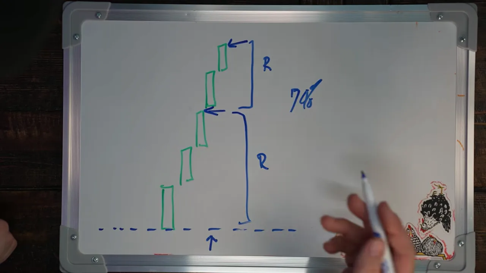
다음 캔들에서 더 올라 이익을 냈더라도 좋은 거래가 아니라고 해요. 위험이 보상보다 컸으니까요. 이런 자리를 꾸준히 잡으면서 이익을 내려면 승률이 아주 높아야 하고, 특히 초보에게는 지속하기 어려워요.
영상은 같은 날 DLXY를 예로 들어요. 1분 차트에서 45에서 110까지 올랐다가 60으로 되밀렸어요(영상은 단위를 말하지 않아요). 상승 중간에 샀다면 손절선은 한참 아래였을 거예요. 이 자리에서 2:1 손익비를 맞추려면 주가가 100% 더 올라야 했다고 해요.
첫 눌림목과 크로싱 캔들
그래서 그는 주가가 처음 쉬어 가기를 기다려요. 그때가 '진실의 순간'이에요. 다시 바닥까지 무너질 수도 있거든요. 하지만 더 밀리지 않고 버티면, 거기가 사려는 사람들이 들어오는 새 지지선이에요.
아래 그림 왼쪽과 오른쪽을 비교해 보세요. 같은 상승에서 사는 자리만 달라요.
눌림 뒤 처음으로 직전 캔들의 고점을 넘는 캔들을 그는 '크로싱 캔들'이라고 불러요. 캔들 위로 캔들이 올라서는 모양이에요. 초록이 이어지다 빨강이 나오면 추세가 아래로 바뀐 거고, 다시 초록이 빨강의 고점을 넘으면 위로 바뀐 거예요. 그 순간 사는 거예요.
아래 화이트보드는 그 자리를 그려 놓은 거예요. 빨간 눌림 캔들들 뒤에 초록 캔들 하나에 상자를 쳐 놓고 'crossing Candle'이라고 적었어요. 그 아래 'Risk'는 눌림목 저점까지의 짧은 거리예요. 위쪽 파란 점선이 당일 고점이에요.
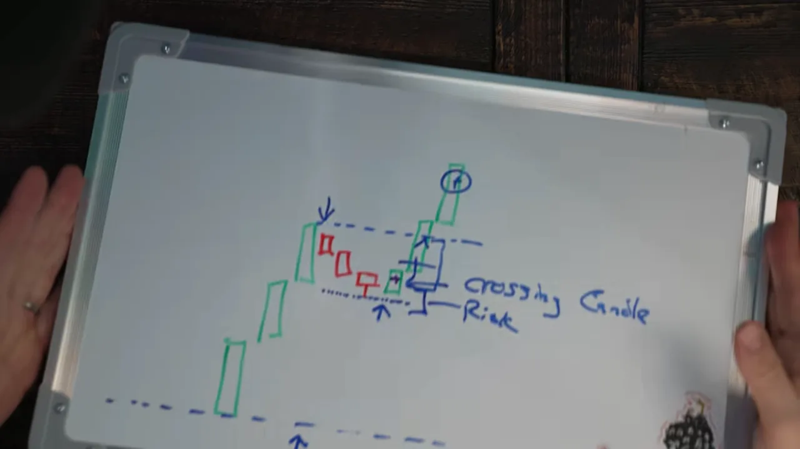
당일 고점에 닿으면 어떻게 할지도 정해 둬요. 보수적일 땐 절반을 팔고 오를수록 더 팔아요. 공격적일 땐 전부 들고 가요. 아주 공격적일 땐 고점 돌파에서 더 사서 평균 단가를 올리고 연장 구간에서 파는데, 이건 시장이 아주 뜨거울 때만 해요.
그의 회사 슬라이드는 같은 패턴을 깔끔하게 정리해 놨어요. 빨간 눌림 캔들 뒤 작은 초록 캔들의 고점(파란 점선)을 넘는 가격이 매수 자리예요. 그다음 캔들이 그 고점을 넘어 크게 오르면 확인이에요.
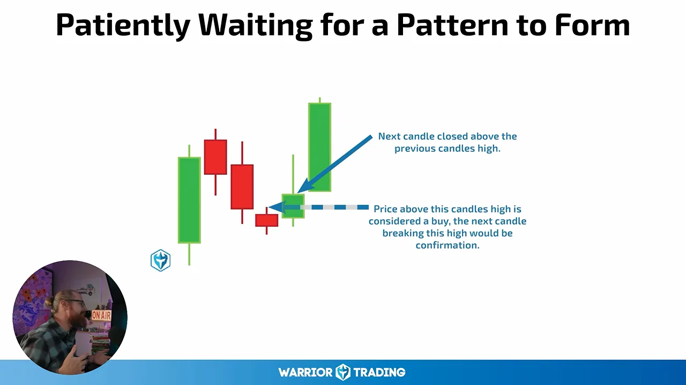
ZTG에서 실제로 산 자리
46일째 ZTG 10초 차트예요. 하얀 화살표가 가리키는 곳이 그가 산 자리로, 첫 눌림 뒤 다시 오르기 시작하는 초록 캔들이에요. 그는 1.55달러와 1.61달러 근처에서 고점 돌파를 노리고 들어갔어요.
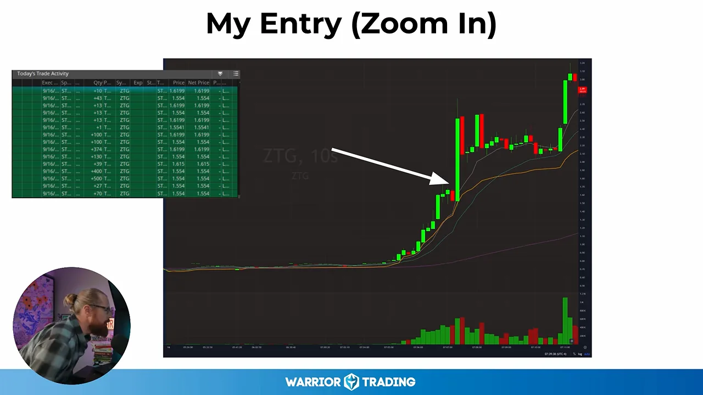
그는 챌린지 동안 이 자리를 못 기다린 날이 있었다고 인정해요. 네 번째 실수예요. 계좌를 빨리 키우고 싶었고, 50개 어린이 병원 기부 목표도 있어서 기회를 놓치기 싫었대요. 그래서 FOMO에 밀려 너무 많이 오른 자리에 뛰어들었어요.
그는 포커 선수 출신 애니 듀크의 이야기를 들려줘요. 그의 오빠는 처음엔 몇 가지 패만 치고 나머지는 다 접으라고 가르쳤대요. 초보 트레이더도 마찬가지로 좋은 패턴 한두 개만 익히고, 그게 몸에 밴 다음에 더 위험한 패턴으로 넓히라고 해요.
3단계: 파는 자리 — 매도 신호
언제 살지 알았으니 이제 언제 팔지예요. 그는 매도 신호를 존중하는 게 아주 중요하다고 말해요. 아래 슬라이드 왼쪽이 그가 보는 신호 여섯 가지, 오른쪽이 46일째 ZTG 1분 차트예요.
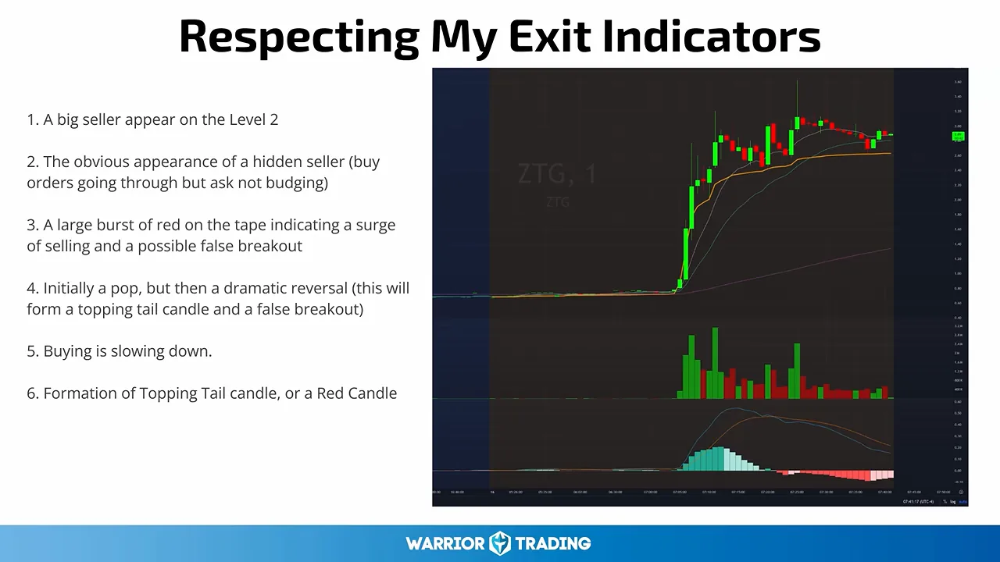
- 호가창에 큰 매도 물량이 보인다 — 그 가격 위로 올라가려면 그 물량을 누군가 다 사 줘야 해요.
- 숨은 매도자가 드러난다 — 매수 체결이 계속 나오는데 가격이 꿈쩍하지 않아요. 누군가 보이지 않는 주문으로 계속 팔고 있다는 뜻이에요.
- 체결창에 빨간 체결이 쏟아진다 — 매도가 몰리고 있고, 가짜 돌파나 반전일 수 있어요.
- 확 올랐다가 크게 되밀린다 — 윗꼬리 캔들이 생기고 가짜 돌파가 돼요.
- 매수세가 느려진다
- 윗꼬리 캔들이나 빨간 캔들이 생긴다
호가창의 큰 매도 물량
그는 화이트보드에 작은 호가창을 그려 첫 번째 신호를 설명해요. 아래 그림 오른쪽 위 상자 왼쪽이 사려는 쪽(Bid), 오른쪽이 팔려는 쪽(Ask)이에요. 5.50달러에 1천 주 매수 주문이 있고, 5.55달러에 10만 주 매도 주문이 걸려 있어요. 차트의 동그라미 친 5.55달러가 지금 가격이에요.
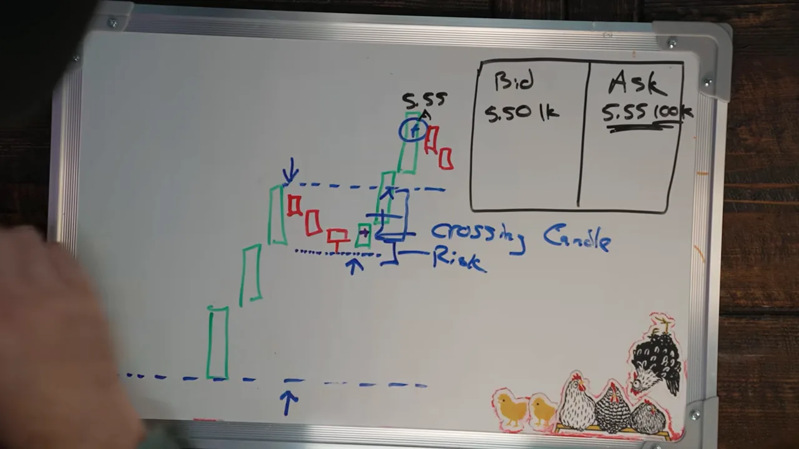
공매도한 사람도 바로 위에 이런 저항이 있으면 되사지 않을 거예요. 그렇다고 캔들 한가운데 비싼 자리에서 새로 사려는 사람도 많지 않아요. 그래서 큰 매도자가 보이면 대개 되밀림이 와요. 짧게 밀렸다가 다시 오를 수도 있지만, 지금 당장은 매도자가 길을 막고 있어요. 특히 막 들어가서 이익 여유가 없을 때는 바로 빠져나와요.
캔들 모양 읽기
네 번째 신호를 설명하려고 그는 캔들스틱 강의를 짧게 해요. 캔들 하나는 정해진 시간(예: 1분) 동안의 시가, 종가, 최고가, 최저가를 담아요. 아래 그림은 그가 말로 설명한 모양들을 나란히 그린 거예요.
시가에서 한 번도 안 내려가고 곧장 올라 고점에서 끝나면 가장 강한 캔들이에요. 처음에 밀렸다가 올라와서 강하게 끝나면 조금 덜 강해요. 크게 밀렸다가 확 올라갔는데, 마감 직전에 매도가 몰려 다시 시가 근처로 내려오면 몸통이 아주 작은 도지가 돼요. 그는 이걸 '망설임의 캔들'이라고 불러요.
상승 끝에서 도지나 윗꼬리가 나오면 반전 신호예요. 다음 캔들이 같은 가격에서 시작해 내려가는 경우가 많아요. 반대로 눌림목 바닥에서 아래꼬리가 나오면, 약했지만 사는 쪽이 받쳐 줬다는 뜻이라 다음 상승에 좋은 신호예요.
거래량도 같이 봐요. 가격이 오를 때 거래량도 점점 늘어야 좋아요. 가격은 오르는데 거래량이 점점 줄면 다이버전스라서, 힘이 빠지고 곧 꺾일 가능성이 높다고 봐요.
초보에게는 너무 많은 정보처럼 들릴 수 있어요. 그는 이걸 '시장의 시각 언어'라고 해요. 골든 리트리버 사진을 보면 순하겠다고, 샴고양이를 보면 할퀼지도 모르겠다고 바로 떠올리는 것처럼, 캔들 모양을 보면 뒤에서 무슨 일이 있었는지 바로 읽게 된다는 거예요. 외국어처럼 많이 듣고 따라 할수록 빨리 는다고 해요.
손실은 오래, 이익은 짧게 — 가장 흔한 실수
그는 종목 고르기는 쉬운 편이고, 첫 눌림목을 기다리는 건 인내가 필요하다고 해요. 가장 많은 트레이더가 넘어지는 곳은 매도예요. 손실 난 종목은 너무 오래 들고 있어서 평균 손실이 커지고, 이긴 거래가 진 거래로 바뀌어 승률도 떨어져요. 반대로 이익 난 종목은 너무 빨리 팔아요.
원인은 대개 처음부터 너무 큰 수량이에요. 아래 화이트보드가 그가 든 예예요. 100주 대신 1만 주로 들어갔다고 해 볼게요. 8센트만 빠져도 -800달러라 겁이 나요. 그러다 8센트 오르면 +800달러에 바로 다 팔아 버려요. 그런데 주가는 그 뒤로 75센트 더 올라요. 1만 주였다면 7,500달러예요.
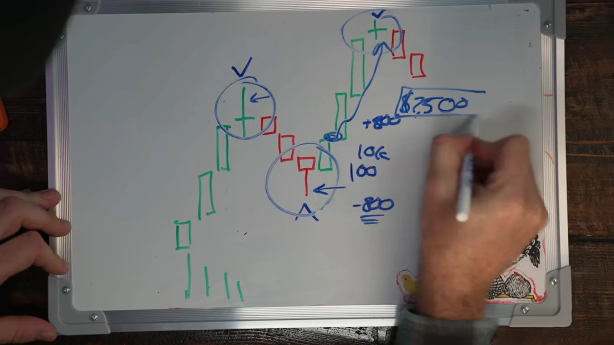
그는 "그들"이라고 말하지만 자기 이야기이기도 하다고 덧붙여요. 사람은 태어날 때부터 좋은 트레이더가 되도록 만들어지지 않았으니, 시스템을 갖추고 그걸 지키는 훈련을 해야 한다는 거예요. 이번 챌린지에서도 감정이 흔들려 손절을 미루고 버틴 날이 있었다고 인정해요.
46일째 ZTG에서 판 자리
이날 그가 본 매도 신호는 셋이었어요. 체결창의 빨간 폭주, 큰 매도자, 그리고 윗꼬리 캔들이에요. 아래 화면 왼쪽 빨간 표가 그의 매도 체결 내역이고, 오른쪽 차트 끝에 윗꼬리 캔들이 표시돼 있어요.
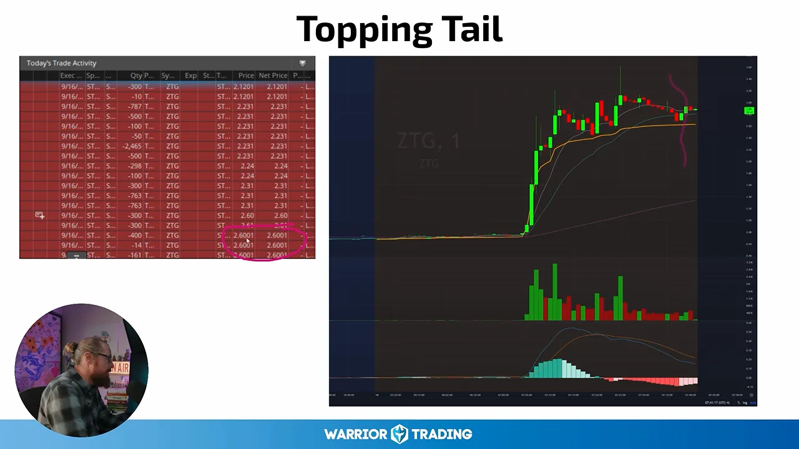
그 뒤 주가는 2.80달러에서 2달러로 내려갔다가 3.20달러, 2.40달러, 3.60달러로 크게 출렁였어요. 그는 들어갔다가 빨리 나오는 방식이라, 신호가 나왔을 때 이익을 챙긴 게 맞는 판단이었다고 해요.
증권사 고르기
이번 챌린지에서 그는 찰스 슈왑을 썼어요. 괜찮은 증권사지만 직접 접속 증권사만큼 빠르지는 않다고 해요. 그는 미국 증권사를 두 종류로 나눠요.
| 수수료 없는 증권사 | 직접 접속 증권사 | |
|---|---|---|
| 주문이 가는 곳 | 도매업자(시장조성자)가 자기 주식으로 체결 | 시장에 바로 |
| 수수료 | 없음 (도매업자가 증권사에 대가를 줌) | 있음, 보통 주문 한 건에 3달러 |
| 속도 | 조금 늦음 | 빠름 |
| 로스가 권하는 구간 | 2,000달러에서 5만 달러쯤까지 | 그 이후 |
수수료 없는 증권사가 공짜인 이유는 주문을 도매업자에게 넘기기 때문이에요. 도매업자는 그 주문으로 이익을 내고, 일부를 증권사에 줘요. 그런데 도매업자가 자기 주식으로 체결하는 과정에서 약간의 지연이 생겨요.
그는 이 지연이 감정에도 영향을 줬다고 해요. 확인을 기다리면 늦을까 봐 미리 들어가고, 팔 때도 큰 빨간 캔들에 걸릴까 봐 일찍 팔게 됐대요. 증권사의 한계 때문에 거래 스타일이 바뀐 건 좋지 않다고 봐요.
계좌 크기에 따라 단계를 나눈다
그래도 소액 계좌에는 수수료 없는 증권사가 맞다고 해요. 하루 목표가 200달러인데 수수료로 하루 수백 달러가 나갈 수도 있거든요. 아래 화이트보드가 그가 그린 단계예요. 왼쪽 아래 2,000달러에서 시작해 5만 달러(50k)까지가 1단계예요. 거기서부터 'Direct Access, Light Speed'라고 적힌 2단계로 넘어가요. 오른쪽에는 '주문 한 건에 3달러'와 100주, 1천 주, 1만 주를 적어 놨어요.
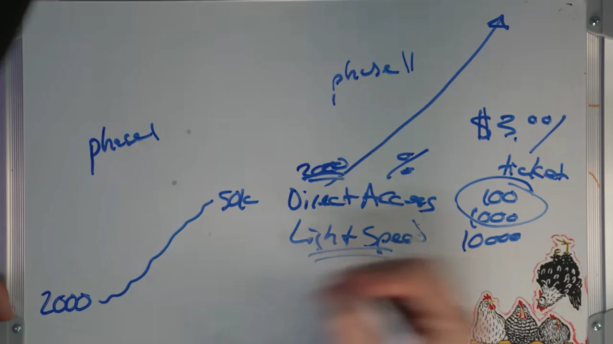
그는 정확히 어디가 경계인지는 모른다고 해요. 10만 달러에서도 이미 문제가 느껴졌으니 그보다는 아래라는 거예요. 그래서 5만 달러쯤에서 직접 접속 증권사로 옮기는 걸 생각해 보라고 해요. 그 자신은 10년 넘게 Lightspeed Trading을 써 왔어요. 수수료는 있지만, 시장이 뜨거울 때 아주 빠르게 들어가고 나와서 다른 무료 증권사에서는 못 낼 이익을 낸다고 해요.
언제 멈출지, 그리고 결과
챌린지에서 그가 가장 힘들어한 건 '언제 멈출지'였어요. 진작 접었어야 할 날에 계속 밀어붙인 날이 여러 번 있었대요. 아래 슬라이드는 그가 정한 멈춤 규칙이에요.
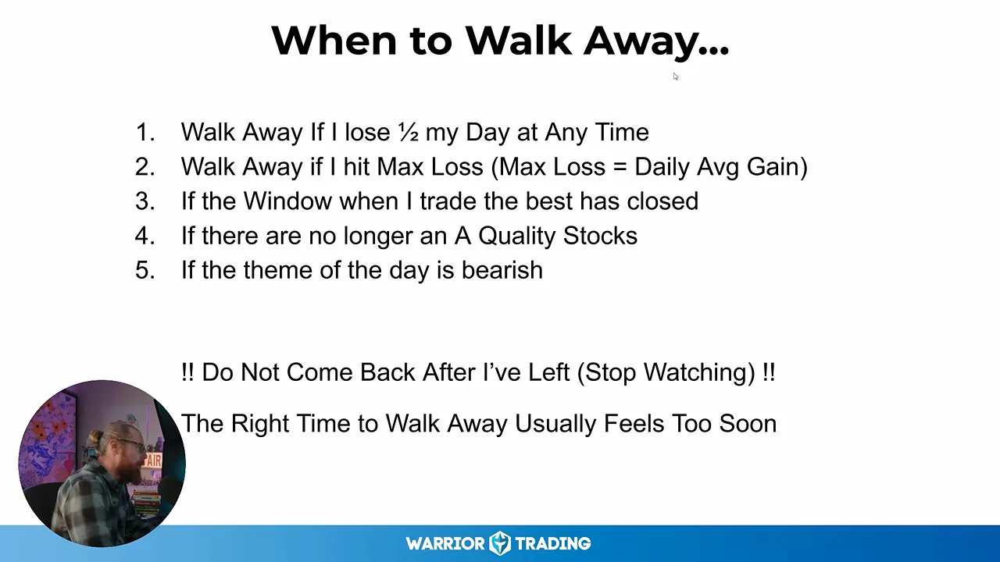
- 그날 번 돈의 절반을 다시 잃었다 — 거의 틀림없이 감정이 흔들린 상태예요.
- 최대 손실에 닿았다 — 슬라이드에는 최대 손실을 '하루 평균 이익과 같은 금액'으로 적어 놨어요.
- 가장 잘하는 시간대가 지났다.
- 더 이상 A급 종목이 없다.
- 그날 시장 분위기가 약하다.
그리고 한 번 떠나면 다시 돌아오지 않아요. 그러려면 보지도 말아야 해요. 휴대폰으로 차트를 계속 보면 뭔가 움직일 때 FOMO가 생기고, 돌아와서 만회하려다 나쁜 날을 더 나쁘게 만든다고 해요.
아래 화면은 그가 직접 꼽은 챌린지의 실수 두 가지예요. 감정이 흔들려 제때 떠나지 못한 것, 그리고 조급해서 질 낮은 종목을 거래한 것이에요. 왼쪽 하루 손익 그래프 오른쪽 끝의 빨간 막대들에 표시를 해 놨어요.
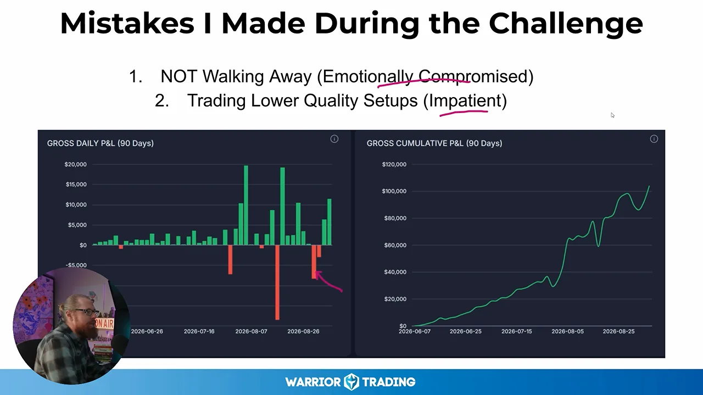
추천 도서
그는 종목 고르기, 사는 자리, 파는 자리 같은 기본기를 익힌 다음에는 트레이딩 심리가 가장 중요하다고 해요. 아래 세 권이 모두 그 주제예요. 왼쪽부터 게리 데이턴의 『Trade Mindfully』, 애니 듀크의 『Thinking in Bets』와 『Quit: The Power of Knowing When to Walk Away』예요.
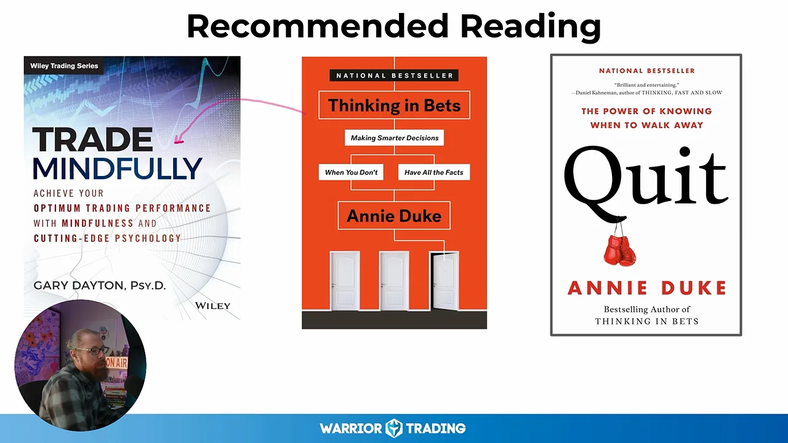
46일째 결과
마지막 화면은 46일째 장을 마친 계좌예요. 맨 위 왼쪽 'Option BP' 칸이 105,951.44달러이고, 아래 'P/L Day' 열의 그날 ZTG 손익이 11,474.36달러예요.
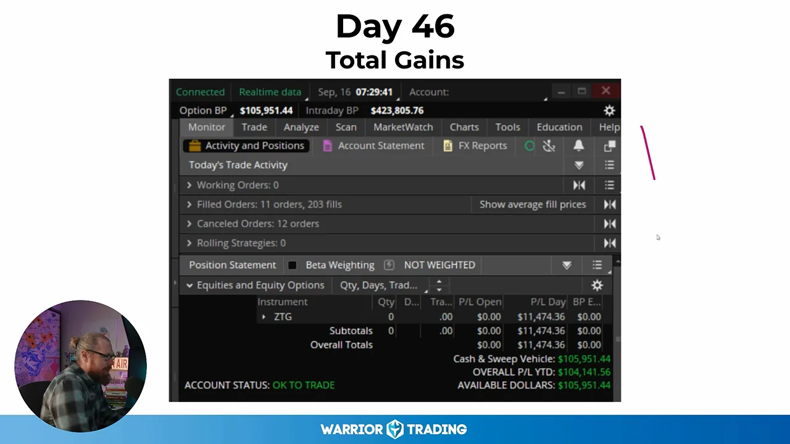
시작한 날보다 계좌가 5,000% 넘게 올랐고, 승률은 약 70%를 지켰어요. 손익비 1:1은 기대보다 조금 낮았다고 해요. 그는 마지막으로 다시 경고해요. 트레이딩은 위험하고, 자기 결과는 일반적이지 않으며, 성공은 보장되지 않는다고요. 위험을 관리하고, 실제 돈을 넣기 전에 늘 모의투자부터 하라는 말로 영상을 끝내요.